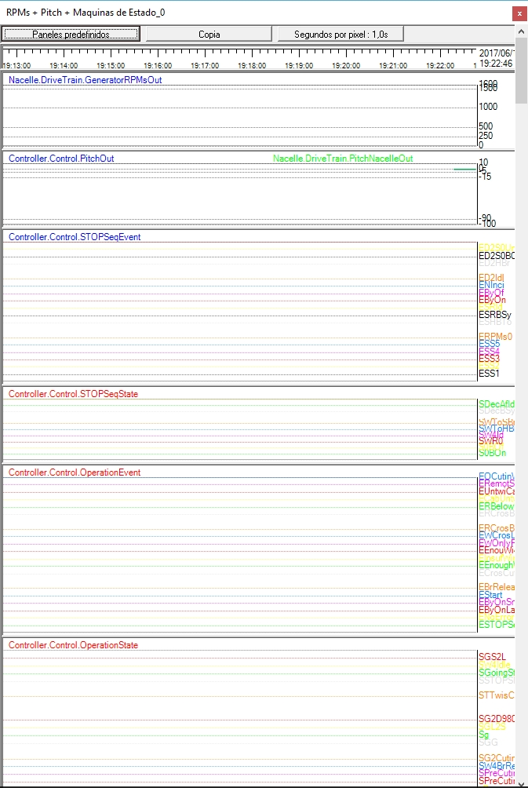

A figura a seguir mostra o painel chamado 'RPMs + Pitch + State Machines', que contém 6 canais.

1.O primeiro 'canal' mostra um único sinal comVelocidade de rotação do eixo do gerador elétrico(em RPMs).
2. O segundo 'canal' apresenta dois sinais:
1.Sinal gerado no Controlador e usado comoo valor do setpointpara a lâminapitch.
2. Sinal do simulador de hub, com o valor de pitch real das lâminas.
3. O terceiro 'canal' apresenta um sinal que corresponde aoúltimo eventorecebido pelamáquina de estado de segurançaimplementado no Controlador. VerMáquina do estado de segurança.
4. O quarto 'canal' apresenta um sinal que corresponde aovalor atual deA máquina do Estado de Segurança.
5. O quinto 'canal' mostra um sinal correspondente aoúltimo eventorecebido pelaMáquina de estado de operaçãoimplementado no Controlador. VerOperação Máquina Estadual.
6. O sexto 'canal' mostra um sinal correspondente aovalor atual dea máquina estatal da Operação.
Este painel é muito útil para seguir oprotocolos de açãoimplementado no Controlador para responder a diferentes circunstâncias e operações, em relação às principais variáveis mecânicas.